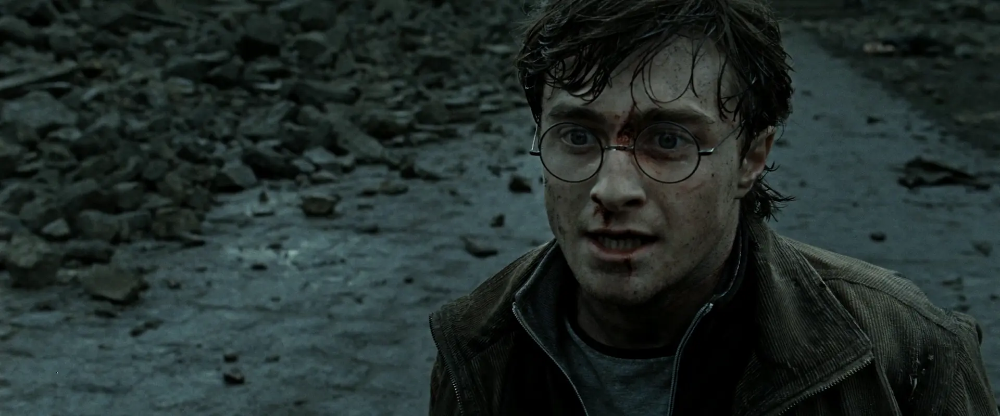
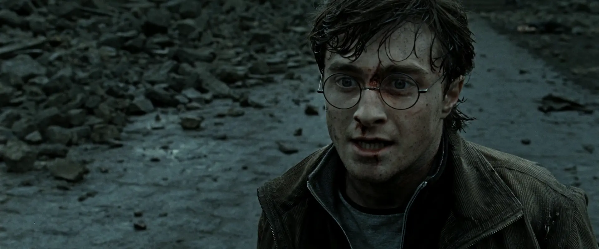

Dear DHX:
先祝你生日快乐！哈哈你终于22了（划掉）！
好吧这是一封赛博信件，让我先唠叨一会为什么会这样。（这封信有背景图，如果没出来，你多放一会儿它应该就出来了，憋急，我图放得太多了加载会慢）
今年我还在想，诶，你地址甚至没变，简直是太有连续性了，翻箱子明信片找出来了，先写了，心想后面找个时间再找信纸（注：如果你记得去年的信，应该意识到有问题了）。
时间来到了上周一（18号），白天接师兄通知我暂时有工位了（工位的事巨长且荒谬，下次有空说），跋山涉水（bushi）去高新上完课，跑工位一看（我的期望是形式上的工位，毕竟师兄只说暂时有），结果它连形式上的工位都不算，只能说是一个微信上的赛博工位，简直气笑了。
那天晚上回家翻箱倒柜找信纸，翻了半天突然想起来，去年那封信是我那袋最后一张信纸。。。。。瞬间小丑了，还连续性呢。
结合以上，灵光一闪，工位都能成赛博的（气笑），为什么不搞个赛博信件，还可以搞好看点（激动，搓手，蠢蠢欲动，没有计算机人能拒绝折腾），不用我那n久没写过的丑字了，然而打脸了，我高估了我的设计和前端水平，你将就着看吧（大悲），我希望你能顺利看到，因为这个挂在github上的，有的时候莫名其妙会打不开。以及那个蛋糕页是我找到的一个特别帅的设计，不舍得动它。
以及我挂上去了才意识到一个问题，你岂不是没法存档，虽然说理论上我的域名到2031还是2032年过期，虽然我还给这个页面加了base64加密，虽然信里实名都缩写了，但毕竟是公开的，我可能过段时间还是得把它下了，安全起见（？），你动动脑筋想想怎么存档吧（樂）。
前置故事废话了半篇作文的字数，服了，还好是赛博信，不然一张还不够（恼）。赛博信的另一个好处，我随意换行，不怕纸不够（大乐）。
先给你通报一个搞笑的事。开学那会儿新生开会选方向，导师点名不让我选，直接把我分到周四小组去了（周一周二周三周四都有小组）。也就意味着我每周四都要开组会。周四组这个方向我从来没接触过，也不知道导师这么搞到底什么安排。周四究竟跟我什么仇什么怨，我简直是蚌埠住了，谁开的好头我不说。
我猜今天你会去看最后一部hp，尽管这部简直改的不成样子了，但生日这天能碰上hp最后一部重映简直太幸福了，不像我，生日那天组会（笑）。
（看这信的背景！希望它加载出来了。。。）这次重映我就去看了hp3，本来125也想去的，我也不知道我在干嘛就错过去了，附近电影院没排片了，气死。不管隔了多少年看了多少遍，还是觉得hp3是原著和商业性和艺术性平衡得最好的一部，虽然里面有些改编已经开始烂了。而且这次去电影院看3，我好像突然get到鹿犬了（不是）
（我试图在这加了个按钮换特定背景图，但是太麻烦了）。就是镜头从躺地的小天狼星向上摇到牡鹿的时候，突然get到原著里那句我很多年都觉得变扭的翻译了：
“尖头叉子再度驰骋”，啊，叉子来救你了。。。
（发癫完了，尴尬，不是）好奇你这专业读研课多吗，能实习吗？挠头，我们好像理论上就是给组里打工，截止到你生日这天还没开始（？），因为之前高年级赶论文ddl，没人管我们新生，有幸在ddl前凌晨一点半听师兄说导师刚开晚会改论文。。。。绝了。。。。不过能摸鱼到今天感觉已经很爽了，毕竟去年决定去向之后就没想读博的事，感觉还是趁能摆尽量摆（不）。
想想明年有可能就要出去找实习了，感觉
前途一片完犊紫.jpg（望天），这居然是我给你写信的第7年了你敢信？讲实话，已经很久没写过中心明确组织严谨的内容了，写作能力大幅下降好吧，尤其赛博信感觉变成了聊天框合集，现在要是翻回前几年的信看看我可能真的会感叹当年写的多有条理哈哈哈，后来就像流水账，不过从另一个角度说，这叫细水长流（呃，好烂的梗，哈哈）。最近常感觉自己失去了表达能力，但回过头来仔细想想这技能我好像就没有拥有过，想想初中写的那么多抽象记叙文吧，简直是要了我的老命，到底是词不达意还是无心去感受，我也不知道。
跑题了跑题了。最后还是回到，
生日快乐！在这奔三的年纪（？），我的祝福依旧是，
身体健康，永远开心！！
愿我们都在自己的路上，追求梦想，拥抱生活！


 
